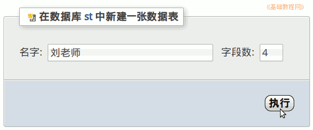
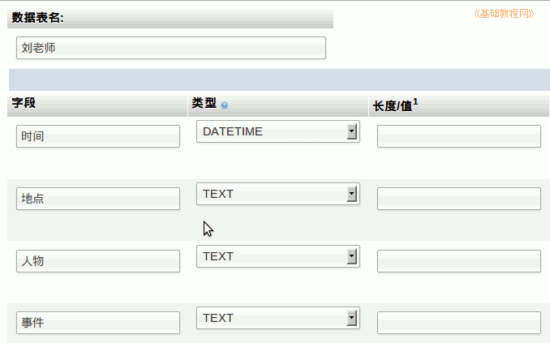
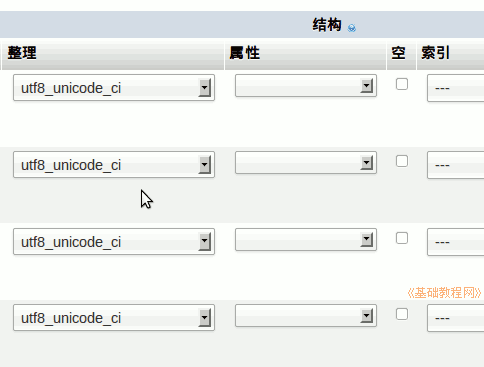

2011-2012 第一学期八年级电子表格教学课程设计
作者：TeliuTe 来源：基础教程网
二十一、学会数据表 返回目录 下一课学习目标：学会新建数据表；
注意事项：编码选utf8，把位置找对，下次直接拉到这儿；
1、学会数据表
1）首先登录数据库，点击左边的“st”数据库；
2）往下拉最下面，找到新建表的位置，用自己的名字，字段数4；

3）依次输入字段名，然后点下边的“保存”；

4）按照“操作指南”新建一个数据表，保存；

课后记 2011-11-23 17:55：
这个opera，按个esc就把插入点弄跑本节学习了新建数据表的基础知识，如果你成功地完成了练习，请继续学习下一课内容；
本教程由86团学校TeliuTe制作|著作权所有
基础教程网：http://teliute.org/
美丽的校园……
转载和引用本站内容，请保留作者和本站链接。